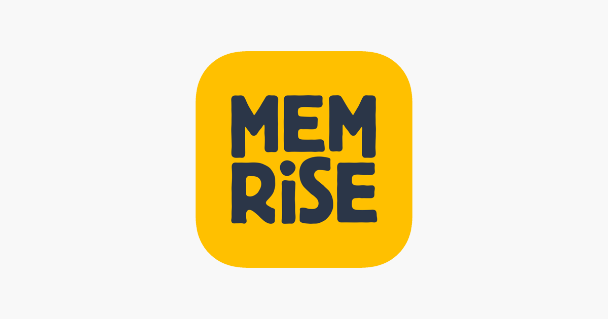
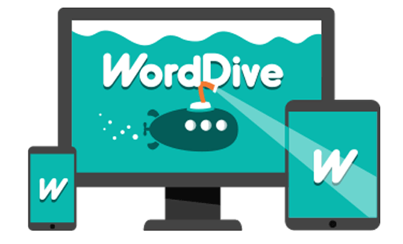
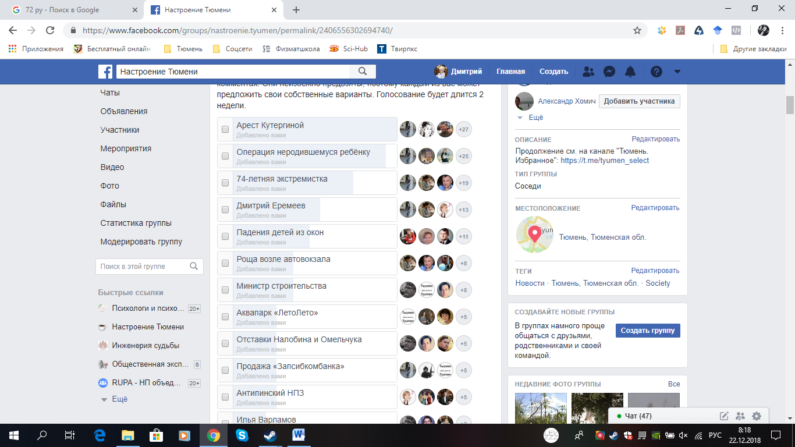

Writing Resources
There are lots of ways to practice writing in Finnish aside from doing exercises from a textbook. You can interact with real Finns through writing, use learning apps, or even write to yourself.Below you will find recommendations for a variety of resource types. Each resource type has examples which are labelled based on what learning level they are appropriate for:
- Complete Beginner (A0-A1)
- Beginner (A1-A2)
- Intermediate (A2-B1)
I have also given each resource a star rating (out of 3) based on how useful it is for this particular skill (but keep in mind the same resource may have a different rating for other skills).
Web Courses ~ Netti Kurssit
Web courses can be a great way to learn a variety of different skills at the same time. It is always good to try and do the exercises after reading the content if you can.
Mobile and Web Apps ~ Apit
Apps can be a great way to learn because they are interactive and combine a variety of skills. Some of them are also adaptive so that they change as you learn. Mobile apps are also a really good way to fit in language learning on the go.

Memrise
Memrise is a flashcard app which shows you cards in a variety of different ways. Decks can be designed by users and also by Memrise so there are many to choose from.
Complete Beginner
Beginner
Intermediate
Free (Premium available)

Anki
Anki is a spaced repetition flashcard app. That means it has scientifically based algorithms that decide how often you need to review each card. Anki has many user created decks but you can also create your own easily.
Complete Beginner
Beginner
Intermediate
Free

WordDive
WordDive is great flash card style app for learning vocabulary and practicing grammar. Every time it shows you a word you also get to see a sentence with the word in context along with its English translation. You also get to hear the sentence in Finnish.
Complete Beginner
Beginner
Intermediate
Paid (Free trial)
Real Finnish People ~ Suomalaiset
You can interact with real Finns in real life and on the internet (who knew?). It's a great way to practice all your different language skills. Even if the sentences are simple to begin with, you have to start somewhere.

Instant Messaging
If you have Finnish friends or family then try to text them in Finnish as much as you can. If you are part of some Finnish clubs or groups then following the conversation in a whatsapp group can also be good practice.
Complete Beginner
Beginner
Intermediate
Free

Facebook Groups
If you are part of a Finnish club or group such as a sports team, a craft group, a church or a meet up they might have a facebook group. There are also facebook groups for buying and selling. Join these groups and read other people's posts. Reply in Finnish too!
Complete Beginner
Beginner
Intermediate
Free
Tori
Tori is a Finnish website for buying and selling used goods. The listings are all in Finnish. Also, in order to buy things you usually message the seller to ask questions about the item and arrange how to meet to inspect or pick it up. This can be great practice.
Complete Beginner
Beginner
Intermediate
Free
A NOTE ON FEEDBACK:
It is always helpful to be able to get some sort of feedback on your writing, but this doesn't have to be from a teacher or a set of answers in your book. Finnish friends and acquaintances can help you correct your writing, but you can even get informal feedback when interacting with Finns through writing just from the way that they respond. Of course if you want to write without any feedback that can still be really good practice as well.